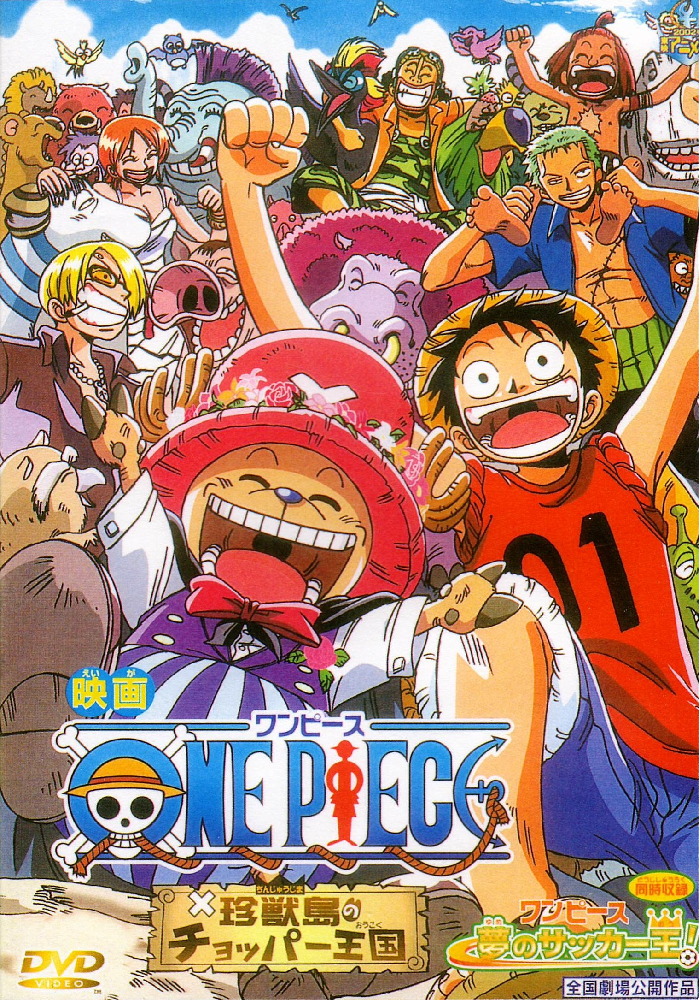

搜狗百科 2017.3.1
《ONE PIECE》（中文译名：海贼王[1]；别名：航海王，海贼路飞，草帽小子）， 简称“OP”，是一部连载中的日本少年漫画作品，作者为尾田荣一郎。 该作于1997年起在日本漫画杂志《周刊少年Jump》定期连载，并在该杂志中长期占 据人气榜的第一位，另外有同名的电视动画、海贼王剧场版和电子游戏等周边媒体产品。 ONE PIECE》漫画单行本在日本以外的亦已有30多个翻译版本发行，发行量在日本本 土突破3亿部，是日本图书出版史上发行量最高的作品。在2009年是排行第一名 的日本最畅销漫画。2012年在第41回日本漫画家协会赏获得大赏。 作业要求超链接
《ONE PIECE》（中文译名：海贼王[1]；别名：航海王，海贼路飞，草帽小子）， 简称“OP”，是一部连载中的日本少年漫画作品，作者为尾田荣一郎。 该作于1997年起在日本漫画杂志《周刊少年Jump》定期连载，并在该杂志中长期占 据人气榜的第一位，另外有同名的电视动画、海贼王剧场版和电子游戏等周边媒体产品。 ONE PIECE》漫画单行本在日本以外的亦已有30多个翻译版本发行，发行量在日本本 土突破3亿部，是日本图书出版史上发行量最高的作品。在2009年是排行第一名 的日本最畅销漫画。2012年在第41回日本漫画家协会赏获得大赏。 新窗口超链接
搜狗百科 2017.3.1
蒙奇·D·路飞：漫画及改编动画《海贼王》的男主角。草帽海贼团船长。 由于他的标志性特征是一顶草帽，因此常被直接称呼为草帽小子/草帽路飞。 梦想是找到传说中的ONE PIECE，成为海贼王。性格积极乐观，爱憎分明且十分重视伙伴， 对任何危险的事物都超感兴趣。看似白痴，却是一个大智若愚型的无愧船长之职的人。 和其他传统的海贼所不同的是，他并不会为了追求财富而无故杀戮，而是享受着身为海贼的冒险 作业要求超链接
娜美：又叫奈美娜美（ナミ，Nami），日本漫画《ONE PIECE》中的女主角。 草帽海贼团的航海士，主人公路飞的第二个伙伴。特征是橘色的短发 （两年后为波浪长发）和左肩的刺青（风车与橘子的图案）。 使用棍术，现在武器为“魔法天候棒”。精通气象学和航海术， 擅长偷术、骗术、谈判及威胁恐吓，头脑聪明又机灵，用身体感知天气， 完美指示航路，是个能精确画出航海图的天才航海士。本质上是个细心善良、 重视感情、嫉恶如仇、坚强能干的女性。喜欢的东西是钱和橘子，梦想是要画出全世界的地图。
排名 2017.3.1
| 表头 | 表头 | 表头 |
|---|---|---|
| 表格内容 | 表格内容 | 操作 |
| 表格内容 | 表格内容 | 操作 |
| 表格内容 | 表格内容 | 操作 |
| 总计 | 1000 | |